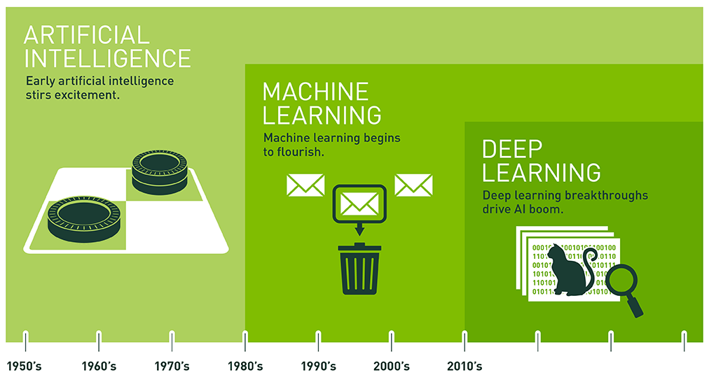
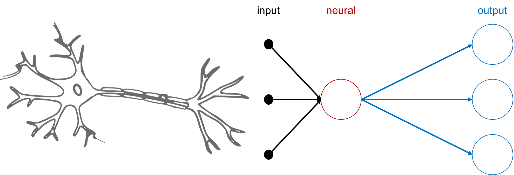

巨量的資料、開源的軟體、更速的機器，開啟了AI大爆炸的時代，而未來的資料量只會越來越多，機器只會越來越聰明，面對這樣排山倒海的壓力，人們到底應該如何適應呢？我始終相信「知己知彼，百戰百勝」，所以讓我們一起進入AI的世界吧！
剛開始接觸機器學習的時候，發現網路上有非常非常多的教學，但都沒有touch到我的理解線，但經過各種旁敲側擊，蒐集不同教學的知識之後，才漸漸理解機器學習是怎麼一回事，接下來這一系列的教學，我會整理我是如何學會「機器學習」的，希望大家在看完這系列後也能follow我的學習流程一起理解機器學習的運作機制。
讓我們開始吧！
人工智慧 : 機器學習 ? 深度學習
人工智慧(Artificial Intelligence, AI)是藉由新興計算機構建具備等同於人類智力特徵的複雜機器，近年因 Google DeepMind 的 AlphaGo 擊敗韓國圍棋棋王李世乭後讓世人們解到人工智慧的強大，從此開啟世界強國的AI競賽，而大家應該很常在網路或新聞上看到人工智慧與「機器學習」以及「深度學習」放在一起，但這三者之間的關係到底是如何呢？
下圖可以清楚的解釋這三者間的關係，最初有個廣義的想法是創造「人工智慧」將計算機賦予接近人類的智慧，接著就開創新的技術研究領域「機器學習」，而「深度學習」則是近幾年機器學習中最重要的分支。

Source: Nvidia Blog
接下來我會針對機器學習的流程、種類以及如何運作進行更詳細的介紹。
機器學習
機器學習(Machine Learning, ML)，是人工智慧的重要分支，該演算法是從資料中自動分析獲得規律，並利用規律對未知資料進行預測的演算法，簡單來說，「機器學習就是讓機器尋找特定函數做最佳預測的過程」。
機器學習的流程
要了解機器學習的流程，就得先知道人類學習的過程，起初各位是如何學會分辨一隻貓或狗？我想大多都是先「觀察」該動物的外觀，接下來「分析」該動物的特徵，接下來根據自己的「經驗」做出「猜測」猜這是貓還是狗，最後透過大人們告訴你這是貓來「修正」自己的經驗。
透過上述的過程，各位可以了解到人類學習的過程是觀察 -> 分析 -> 經驗 -> 猜測 -> 修正這個循環。所以為了讓機器也能像人類一樣學習與判斷的能力，我們透過相同的學習步驟移駕置機器上，整理如下：
獲取數據 (觀察)：機器需要大量的數據資料進行訓練，而資料可從各種不同層面獲取。分析數據 (分析)：針對蒐集到的數據進行分析，找出可能的規則。建立模型 (經驗)：找出可能的規則後，會根據該規則來建立 模型（Model) 即類似人類的 經驗（Experience），此步驟是機器學習的核心。預測未來 (猜測)：等學習完之後，再將新的數據丟入模型來預測結果。修正模型 (修正)：若預測結果不如預期，則修改模型優化自己的經驗。
機器學習的種類
-
監督式學習 (Supervised learning)：所有資料都有標準答案，可以提供機器學習在輸出時判斷誤差使用，讓預測時比較精準，就好像模擬考有提供答案，學生考後可以修正錯誤，這樣聯考時成績會比較好。例如：我們任意選出 100 張照片並且給予 「標籤」（Label） 哪些是貓哪些是狗，輸入電腦後讓電腦學習認識貓與狗的外觀，因為照片已經標註了，因此電腦只要把照片內的 「特徵」（Feature） 取出來，將來在做預測時只要尋找這個特徵（四肢腳、尖耳朵、長鬍鬚）就可以辨識這可能是貓了！這種方法等於是人工「分類」，對電腦而言最簡單，但是對人類來說最辛苦。 -
非監督式學習 (Un-supervised learning)：所有資料都沒有標準答案，無法提供機器學習輸出判斷誤差使用，機器必須自己尋找答案，預測時比較不準，就好像模擬考沒有提供答案，學生考後無法修正錯誤，這樣聯考時成績會比較差。例如：我們任意選出 100 張照片但是沒有標註，輸入電腦後讓電腦學習認識貓與狗的外觀，因為照片沒有標註，因此電腦必須自己嘗試把照片內的「特徵」取出來，同時自己進行「分類」，將來在做預測時只要尋找這個特徵（四隻腳、尖耳朵、長鬍子）就可以辨識是「哪類動物」了！這種方法不必人工分類，對人類來說最簡單，但是對電腦來說最辛苦，而且判斷誤差比較大。 -
半監督式學習 (Semi-supervised learning)：少部分資料有標準答案，可提供機器學習輸出判斷誤差使用；大部分資料沒有標準答案，機器必須自己尋找答案，等於是結合監督式與非監督式學習的優點。例如：我們任意選出 100 張照片，其中 10 張標註哪些是貓哪些是狗，輸入電腦後讓電腦學習認識貓與狗的外觀，電腦只要把照片內的特徵取出來，再自己嘗試把另外 90 張照片內的特徵取出來，同時自己進行分類。這種方法只需要少量的人工分類，又可以讓預測時比較精準， 是目前最常使用的一種方式 。 -
增強式學習 (Reinforcement learning)：讓機器自己嘗試錯誤並且找出最佳答案，可視為一種「半監督式學習」。前面介紹的三種學習方式，都必須有明確的答案或明確的決策，但此方法 是針對決策結果進行評分 （就像是一位虛擬老師，他不會告訴你應該怎麼做，怎麼決定，他只為你做的事打分數，我們學習的目標就是 想辦法找出一個得到高分的方法 ），因此可根據不同狀態條件（or不同使用者）進行修正，並提供高適應性的成效，例如：這封信是不是垃圾郵件？針對您近期觀看的影片，推薦相似類型的影片等。或如果遇到必須做出連續決策的時候，就必須一步步修正答案與決策，例如：進行圍棋遊戲時，必須依照對手的每一步棋來修正下一步要怎麼走，或是自動駕駛車，必須依照路況的變化來修正下一步要怎麼走等，就是屬於增強式學習，為非常具有潛力的ML演算法。
機器學習如何運作
「模仿，是學習的第一步！」，為使機器像人類一樣學習，科學家透過模擬人類的神經元運作模式，創建了「人工神經網路」(Artificial Neural Network，ANN)又稱「類神經網路」，經過大量的資料以及適當的訓練，使整個神經網路架構得以逼近某特定的目標函數。

人類神經元與類神經網路對比圖